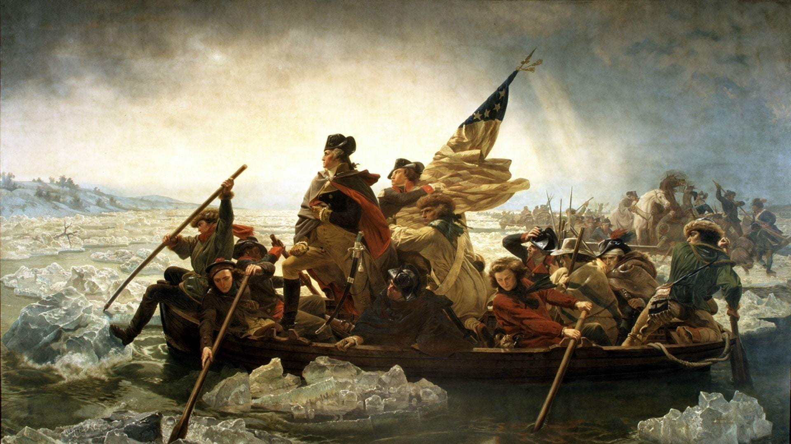

Visit New Jersey
The Garden State
The Garden State
History of New Jersey
Early Inhabitants:
Prior to European settlers arrived, the region was home to various Native American tribes, including the Lenape.Colonial Era:
New Jersey’s colonial history began when Henry Hudson sailed the Newark Bay in 1609. Settlers from the Netherlands, Sweden and Finland settled in Bergen, forming the first permanent European settlement in the state. In 1664, the Dutch lost control of New Jersey, which was part of the New Netherlands colony at the time, to the English. The British split the colony and gave control to two proprietors: Control of the east went to Sir George Carteret and control of the west to Lord John Berkley. (Source:www.history.com)

American Revolution:
New Jersey played a crucial role in the American Revolution. The famous crossing of the Delaware River by George Washington took place on Christmas night in 1776, leading to a pivotal victory at the Battle of Trenton. Washington's victory at Trenton has been described as the most important American military victory ever, because if he had lost it, the nation would have perished in its infancy. The state has rightfully been dubbed the “Crossroads of the American Revolution.” (Source:https://visitnj.org/)
Industrialization:
In the 19th century, New Jersey experienced significant industrial growth, particularly in cities like Paterson and Trenton.The state's economic expansion had a lot to do with the genius of its inventors such as Thomas Edison and his inventions, including the light bulb, Edison helped develop the motion picture while working in New Jersey. Fort Lee became the motion picture capital of the world in the early 1900s. There, Fatty Arbuckle, Mary Pickford, Pearl White, and other stars revolutionized entertainment with their movies. Today, New Jersey is a densely populated state with a diverse economy. It is known for its pharmaceutical industry, technology sector, and proximity to major cities like New York City and Philadelphia. (Source:https://nj.gov/)New Jersey's principal industries
- Pharmaceuticals
- Life sciences
- Financial Services
- Advanced Manufacturing
- Information Technology
- Transportation and Logistic